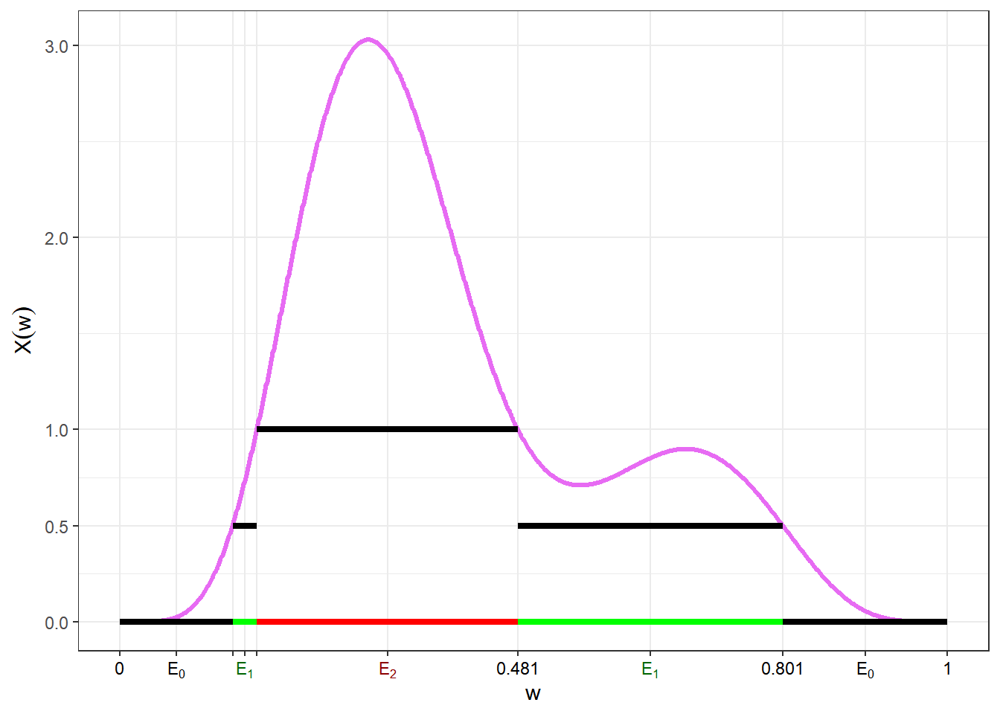
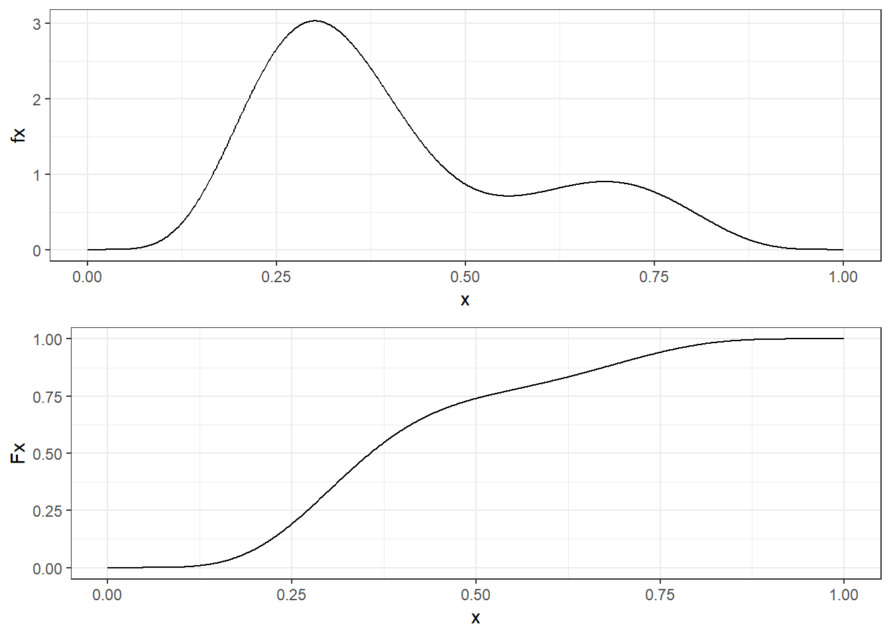

A Breve Resumo de Medida e Probabilidade
Essa seção tem o objetivo de apresentar as ideias de probabilidade como uma medida e da integral de Lebesgue. Para maiores detalhes, ver Ash and Doleans-Dade (2000), Billingsley (1986), Shiryaev (1996) ou, para uma versão mais resumida, os Apêndices de Schervish (2012).
A.1 Conceitos Básicos
\(\Omega\): espaço amostral (um conjunto não vazio).
\(\mathcal{A}\): \(\sigma\)-álgebra de subconjuntos de \(\Omega\), isto é,
- \(\Omega \in \mathcal{A}\);
- \(A \in \mathcal{A} \Longrightarrow A^{c} \in \mathcal{A}\);
- \(\displaystyle A_1, A_2, \ldots \in \mathcal{A} \Longrightarrow \bigcup_{i\geq1} A_i \in \mathcal{A}\).
Os elementos de \(\mathcal{A}\) são chamados de eventos e serão denotados por \(A, B, C, \ldots, A_1, A_2, \ldots\)
Uma coleção de eventos \(A_1,A_2,\ldots\) forma uma partição de \(\Omega\) se \(A_i \cap A_j = \varnothing\), \(\forall i \neq j\), e \(\displaystyle \bigcup_{i=1}^{\infty} A_i = \Omega\).
\((\Omega, \mathcal{A})\): espaço mensurável.
Usualmente, denota-se a \(\sigma\)-álgebra gerada por um conjunto \(\mathcal{C}\) como \(\sigma(\mathcal{C})\). Por exemplo:
- \(\sigma(\Omega) = \{\varnothing,\Omega\}~~\) (\(\sigma\)-ágebra trivial);
- Para \(A \subset \Omega\), \(\sigma(A) = \{\varnothing, A, A^c, \Omega\}\);
- \(\sigma(\mathbb{N}) = \mathcal{P}(\mathbb{N})~~\) (partes de \(\mathbb{N}\), todos o subconjuntos de \(\mathbb{N}\));
- \(\sigma\left(\left\{(-\infty,x): x \in \mathbb{R}\right\}\right) = \mathcal{B}\left(\mathbb{R}\right)~~\) (borelianos de \(\mathbb{R}\))
\(~\)
Definição: A função \(\mu: \mathcal{A} \longrightarrow \bar{\mathbb{R}}_+\) é uma medida se
1. \(\mu(\varnothing) = 0\);
2. \(\displaystyle A_1, A_2, \ldots \in \mathcal{A}\) com \(A_i \bigcap A_j = \varnothing\) , \(\forall i \neq j\) , \(\displaystyle \mu\left(\bigcup_{i \geq 1} A_i\right) = \sum_{i \geq 1} \mu\left(A_i\right)\).
- \((\Omega,\mathcal{A}, \mu)\) é chamado de espaço de medida.
\(~\)
Exemplo 1 (medida de contagem): Seja \(\Omega\) um conjunto não vazio e \(A\subseteq \Omega\). Defina \(\nu(A)=|A|\) como o número de elementos (cardinalidade) de \(A\). Assim, \(\nu(\Omega) > 0\), \(\nu(\varnothing)=0\) e, se \((A_n)_{n \geq 1}\) é uma sequência de eventos disjuntos, então \(\nu(\cup A_n) = \sum \nu(A_n)\). Note que \(\nu(A)=\infty\) é possivel se \(\Omega\) tem infinitos elementos.
\(~\)
Exemplo 2 (medida de Lebesgue): Seja \(\Omega=\mathbb{R}\) e \(A\subseteq \Omega\) um intervalo. Se \(A\) é limitado, defina \(\lambda(A)\) como o comprimento do intervalo \(A\). Se \(A\) não é limitado, \(\lambda(A)=\infty\). Note que \(\lambda(\mathbb{R})=\infty\), \(\lambda(\varnothing)=0\) e, se \(A_1 \cap A_2 = \varnothing\) e \(A_1 \cup A_2\) é um intervalo (ou uma união de intervalos disjuntos), então \(\lambda(A_1 \cup A_2) = \lambda(A_1) + \lambda(A_2)\).
\(~\)
Exemplo 3: Seja \(f: \mathbb{R} \longrightarrow \mathbb{R}_+\) uma função contínua e não nula. Para cada intervalo \(A\), defina \(\displaystyle \mu(A) = \int_A f(x) dx = \int_{\mathbb{R}} \mathbb{I}_A(x) f(x) dx\). Então, \(\mu(\mathbb{R})>0\), \(\mu(\varnothing)=0\) e, se \(A_1 \cap A_2 = \varnothing\) e \(A_1 \cup A_2\) é um intervalo (ou uma união de intervalos disjuntos), então \(\mu(A_1 \cup A_2) = \mu(A_1) + \mu(A_2)\).
\(~\)
- Se \(\mu(\Omega) < \infty\) dizemos que \(\mu\) é uma medida finita. Se existe uma partição enumerável de \(\Omega\), \(A_1,A_2,\ldots\), tal que cada elemento da partição tem medida finita, \(\mu(A_i)<\infty\), \(\forall i\), dizemos que \(\mu\) é uma medida \(\sigma\)-finita.
\(~\)
Definição: \(P: \mathcal{A} \longrightarrow [0,1]\) é uma medida de probabilidade se
1. \(P(\Omega) = 1\);
2. \(\displaystyle A_1, A_2, \ldots \in \mathcal{A}\) com \(A_i \bigcap A_j = \varnothing\) , \(\displaystyle P\left(\bigcup_{i \geq 1} A_i\right) = \sum_{i \geq 1} P\left(A_i\right)\).
- \((\Omega, \mathcal{A}, P)\): espaço de probabilidade
\(~\)
Definição: Seja \((\Omega,\mathcal{A})\) e \((\mathfrak{X},\mathcal{F})\) dois espaços mensuráveis. Uma função \(X: \Omega \longrightarrow \mathfrak{X}\) é chamado de quantidade aleatória se é uma função mensurável, isto é, se \(\forall B \in \mathcal{F}\), o evento \(A = X^{-1}(B)\) \(= \left\{\omega \in \Omega:~X(\omega)\in B\right\}\) pertence à \(\sigma\)-álgebra original \(\mathcal{A}\).
Se \(\mathfrak{X} = \mathbb{R}\) e \(\mathcal{F}=\mathcal{B}(\mathbb{R})\) (\(\sigma\)-álgebra de Borel), \(X\) é chamada variável aleatória (v.a.).
Considere \((\Omega,\mathcal{A},P)\). A medida de probabilidade \(P_X\) induzida por \(X\) recebe o nome de distribuição de \(X\). Se \(B \in \mathcal{F}\) e \(A = \{\omega \in \Omega : X(\omega) \in B\} \in \mathcal{A}\), a medida induzida por \(X\) é \[P_X(B) = P_X\left(X \in B\right) = P\left(\{\omega \in \Omega : X(\omega) \in B\}\right) = P(A)~.\]
A distribuição de \(X\) é dita ser discreta se existe um conjunto enumerável \(A \subseteq \mathfrak{X}\) tal que \(P_X(A)=1\). A distribuição de \(X\) é contínua se \(P_X\left(\{x\}\right)=0\) para todo \(x \in \mathfrak{X}\).
\(~\)
\(~\)
A.2 Valor Esperado de \(X\) (OU uma ideia da tal Integral de Lebesgue)
Por simplicidade, considere o espaço \(\Big(\Omega = [0,1]~,~~ \mathcal{A} = \mathcal{B}\left([0,1]\right)~,~~ P=\lambda\Big)\).
Seja \(X: \Omega \longrightarrow \mathbb{R}_+\) uma variável aleatória discreta, assumindo valores não negativos \(\mathfrak{X}=\{x_1,x_2,\ldots,x_k\}\) com probabilidades \(\{p_1,p_2,\ldots,p_k\}\). Nos cursos básicos de probabilidade é visto que o valor esperado (ou esperança) de \(X\) é \(E[X] =\) \(\sum x_i P(X=x_i) =\) \(\sum x_i p_i\).
Podemos definir essa v.a. como
\(X(\omega) = \left\{\begin{array}{ll} x_1, & \omega \in [0,p_1] = A_1 \\ x_2, & \omega \in [p_1,p_1+p_2] = A_2 \\ \vdots & \\ x_j, & \omega \in \left[\displaystyle\sum_{i=1}^{j-1} p_i,\sum_{i=1}^{j} p_i\right] = A_j \\ \vdots & \\ x_k, & \omega \in [1-p_k,1] = A_k \end{array}\right.\)

Note que a medida \(\lambda\) define uma distribuição uniforme no espaço \((\Omega,\mathcal{A})\). Assim, temos que
\(P_X(X=x_1)\) \(=P\left(X^{-1}(x_1)\right)\) \(=P\left(\{\omega \in \Omega : X(\omega)=x_1\}\right)\) \(=P(A_1)\) \(=\lambda\left([0,p_1]\right)\) \(=p_1\),
\(P_X(X=x_j)\) \(=P\left(\{\omega \in \Omega : X(\omega)=x_j\}\right)\) \(=\lambda\left(\left[\sum_{i=1}^{j-1} p_i,\sum_{i=1}^{j} p_i\right]\right)\) \(=p_j ~,~\) \(j \in \{2,\ldots,k\}\).
\(~\)
Definição: Uma função mensurável \(X: \Omega \longrightarrow \mathbb{R}_+\) é dita simples se assumir um número finito de valores.
\(~\)
Definição: Considere um espaço de probabilidade \((\Omega, \mathcal{A}, P)\), \(X:\Omega\longrightarrow \mathbb{R}_+\) v.a. assumindo valores \(\{x_1,x_2,\ldots,x_k\}\) e \(A_1,A_2,\ldots,A_k\) eventos disjuntos em \(\mathcal{A}\). Seja \(\displaystyle X(\omega) = \sum_{i=1}^{k} x_i ~\mathbb{I}_{A_i}(\omega)\), uma função simples com \(A_i = X^{-1}(x_i)\), \(i=1,\ldots,k\). A integral de Lebesgue de \(X\) em relação à medida \(P\) é \[E[X] = \int_\Omega X dP = \sum_{i=1}^{k} x_i P(A_i).\]
\(~\)
Propriedades: se \(X, Y: \Omega \longrightarrow \mathbb{R}_+\) são funções simples, então
1. \(\displaystyle\int_\Omega X dP \geq 0\);
2. \(\displaystyle\int_\Omega cX dP = c\int_\Omega X dP\);
3. \(\displaystyle\int_\Omega (X+Y) dP = \int_\Omega X dP + \int_\Omega Y dP\).
\(~\)
Demo 1. Segue de \(x_i \geq 0\) e \(P(A_i) \geq 0\).
Demo 2.
Para \(X\) v.a. temos
\(X =\displaystyle \sum_{i=1}^kx_i~\mathbb{I}_{A_i}\) e \(cX = \displaystyle\sum_{i=1}^k c~x_i ~\mathbb{I}_{A_i}\). Logo,
\(\displaystyle\int_\Omega cX~dP = \sum_{i=1}^k c~x_i~P(A_i)\) \(=\displaystyle c\sum_{i=1}^kx_i P(A_i) = c\int_\Omega X dP\).
Demo 3.
\(X = \sum_{i=1}^kx_i~\mathbb{I}_{A_i}\) e \(Y = \sum_{j=1}^ly_j~\mathbb{I}_{B_j}\).
\(X + Y\) \(=\displaystyle \sum_{i=1}^k x_i ~\mathbb{I}_{A_i} + \sum_{j=1}^l y_j~\mathbb{I}_{B_j}\) \(=\displaystyle\sum_{i=1}^k\sum_{j=1}^lx_i~\mathbb{I}_{A_i\cap B_j} + \sum_{i=1}^k\sum_{j=1}^ly_j~\mathbb{I}_{A_i\cap B_j}\) \(=\displaystyle\sum_{i=1}^k\sum_{j=1}^l(x_i+y_j)~\mathbb{I}_{A_i\cap B_j}\).
\(\displaystyle \int_\Omega (X + Y) dP\) \(=\displaystyle \sum_{i=1}^k\sum_{j=1}^l (x_i + y_j)P(A_i\cap B_j)\) \(=\displaystyle\sum_{i=1}^k\sum_{j=1}^l x_iP(A_i\cap B_j) + \sum_{i=1}^k\sum_{j=1}^l y_jP(A_i\cap B_j)\) \(=\displaystyle\sum_{i=1}^k x_i P(A_i) + \sum_{j=1}^l y_j P(B_j)\) \(=\displaystyle\int_\Omega X dP + \int_\Omega Y dP\).
\(~\)
\(~\)
A generalização da integral de Lebesgue é feita usando resultados como o Lema de Fatou e os teoremas da convergência monótona e da convergência dominada. Aqui será apresentado apenas uma ideia dessa extensão. Para maiores detalhes, veja as referências citadas anteriormente (Ash and Doleans-Dade 2000; Schervish 2012; Billingsley 1986; Shiryaev 1996).
\(~\)
\(~\)
Definição: Seja \(X:\Omega\longrightarrow \mathbb{R}_+\) uma função mensurável não negativa e considere o conjunto de funções \(\mathcal{C}_X\) \(= \{ f:\Omega\longrightarrow \mathbb{R}_+~,~~f~~\text{simples}~,~~f \leq X\}\). O valor esperado de \(X\) é \[E[X]=\int_\Omega XdP=\sup\left\{\int_\Omega fdP: f\in \mathcal{C}_X\right\}~.\]
\(~\)
Resultado: Para toda função \(X:\Omega \longrightarrow \mathbb{R}_+\), existe uma sequência \((X_n)_{n\geq 1}\) de funções simples não-negativas tais que \(X_n(\omega)\leq X_{n+1}(\omega)\), \(\forall \omega \in \Omega\), \(\forall n \in \mathbb{N}\) com \(X_n(\omega)\uparrow X(\omega)\), \(\forall \omega \in \Omega\).
\(~\)
Exemplo de sequência \((X_n)_{n\geq 1}\) atendendo as condições anteriores
Para cada \(n\), considere \(1+n2^n\) conjuntos em \(\mathcal{A}:\)
\(E_j^n = \left\{\omega \in \Omega: \dfrac{j}{2^n} \leq X(\omega) \leq \dfrac{j+1}{2^n} \right\}\), \(j = 0,1,\ldots,n2^n-1.\)
\(E_{n2^n}^n = \Big\{ \omega \in \Omega: X(\omega)\geq n \Big\}\)
e defina \(\displaystyle X_n(\omega) = \sum_{j=0}^{n2^n} \dfrac{j}{2^n} ~\mathbb{I}_{E_j^n}(\omega)\). Pode-se provar que \((X_n)_{n\geq 1}\) é tal que
\(X_n\) é simples, \(\forall n \geq 1\)
\(X_n \leq X_{n+1}\)
\(X_{n}(\omega) \uparrow X(\omega)\)
\(~\)
A primeira função dessa sequência é
\(X_1(\omega)\) \(= \displaystyle\sum_{i=0}^2 \frac{i}{2}~\mathbb{I}_{{E}_i^1}(\omega)\) \(=\displaystyle\left\{\begin{array}{ll}0,&\omega\in{E}_0^1\\ 0.5,&\omega\in{E}_1^1\\1,&\omega\in{E}_2^1 \end{array}\right.\).

O gráfico a seguir mostra os quatro primeiras funções da sequência \(\left(X_n\right)_{n\geq 1}\) e é possível ter uma ideia da convergência para \(X\).
\(~\)
\(~\)
Resultado: \(X,Y: \Omega \longrightarrow\mathbb{R}_+,\) com \(X\leq Y\). Então \(E[X] \leq E[Y]\).
Demo: Como \(X \leq Y\) (isto é, \(X(\omega) \leq Y(\omega)\) \(\forall \omega \in \Omega\)), \(\mathcal{C}_X \subseteq \mathcal{C}_Y\)
\(\Rightarrow \sup\left\{\displaystyle\int_\Omega f~dP:~ f\in \mathcal{C}_X\right\} \leq \sup\left\{\displaystyle\int_\Omega g~dP:~ g\in \mathcal{C}_Y\right\}\) \(\Rightarrow \displaystyle\int_\Omega XdP \leq \displaystyle\int_\Omega YdP\).
\(~\)
Definição: Seja \(X:\Omega \longrightarrow\mathbb{R}_+\) e \(E \in \mathcal{A}\) definimos \(E(X~\mathbb{I}_E) = \displaystyle\int_EXdP\) \(=\displaystyle\int_\Omega X~\mathbb{I}_EdP\).
Se \(E,F \in \mathcal{A}\) com \(E\subseteq F\), \(\displaystyle\int_E XdP \leq \int_F XdP.\)
\(~\)
\(~\)
Propriedades: se \(X, Y: \Omega \longrightarrow \mathbb{R}_+\) são funções mensuráveis positivas, então
1. \(\displaystyle\int_\Omega cXdP =\) \(c\displaystyle\int_\Omega XdP, c\geq 0\);
2. \(\displaystyle\int_\Omega (X+Y)dP =\) \(\displaystyle\int_\Omega XdP + \int_\Omega YdP\).
Demo 1. Seja \(X_n\uparrow X,\) \(X_n \geq 0\) simples. Então \(cX_n\uparrow cX,\) \(cX_n \geq 0,\) simples.
\(\displaystyle\int_\Omega cX dP\) \(=\displaystyle\lim_{n\rightarrow\infty}\int_\Omega cX_n dP\) \(=\displaystyle\lim_{n\rightarrow\infty}c\int_\Omega X_n dP\) \(=\displaystyle c\lim_{n\rightarrow\infty}\int_\Omega X_n dP\) \(=\displaystyle c\int_\Omega X dP\).
Demo 2. Exercício.
\(~\)
Exemplo: Suponha que \(X\) assume valores em \(\mathbb{N}\). Pode-se escrever \(X =\displaystyle\sum_{i=1}^\infty i ~\mathbb{I}_{A_i}~\), com \(A_i = X^{-1}\left(\{i\}\right)\).
Defina \(X_n =\displaystyle\sum_{i=1}^{n-1} i ~\mathbb{I}_{A_i}+n~\mathbb{I}_{\underset{j=n}{\cup} A_j}\). Então \(X_n\) é simples, \(X_n \geq 0~\), \(X_n \leq X_{n+1}\) e \(X_n \uparrow X\), de modo que \(E(X)\) \(=\displaystyle\int_\Omega X dP\) \(=\displaystyle\lim_{n \rightarrow\infty}\int_\Omega X_n dP\). Além disso,
\(\displaystyle\int_\Omega X_n dP\) \(=\displaystyle\sum_{i=1}^{n-1} i~P(A_i) + n~P\left(\bigcup_{j=n}^{\infty} A_j\right)\) \(=\displaystyle\sum_{i=1}^{n-1}i~P(X = i) + n~P(X \geq n)\) \(=\displaystyle\sum_{i=1}^{n-1} \sum_{j=1}^{i} P(X = i) + n~P(X \geq n)\) \(\displaystyle=\sum_{j=1}^{n-1} \sum_{i=j}^{n-1} P(X = i) + n~P(X \geq n)\) \(=\displaystyle\sum_{j=1}^{n-1}P(j \leq X \leq n-1) + n~P(X \geq n)\) \(=\displaystyle\sum_{j=1}^n P(X \geq j)\),
então, \(E(X)\) \(\displaystyle=\lim_{n\rightarrow \infty}\sum_{j=1}^nP(X \geq j)\) \(\displaystyle=\sum_{j=1}^{\infty}P(X \geq j)\).
\(~\)
Seja \(X: \Omega \longrightarrow \mathbb{R}\) e \(X^-,X^+: \Omega \longrightarrow \mathbb{R}\) dados por
\(X^- = \max\{-X,0\}~\) (parte negativa de \(X\)) e
\(X^+ = \max\{X,0\}~\) (parte positiva de \(X\))
\(~\)
\(~\)
Note que \(X = X^+ - X^-\)
\(~\)
Se \(\displaystyle\int_\Omega X^+ dP < \infty\) ou \(\displaystyle\int_\Omega X^- dP < \infty\), definimos
\(E[X]\) \(=\displaystyle\int X dP\) \(=\displaystyle\int_\Omega X^+dP - \int_\Omega X^- dP\) \(=E\left[X^+\right] - E\left[X^-\right]\).
\(~\)
Além disso, seja \(|X| = X^+ + X^-\). Então, \(E\left[~|X|~\right] < \infty\) se \(E(X^+) < \infty\) e \(E(X^-) < \infty\), e, nesse caso, dizemos que \(X\) é integrável.
\(~\)
Propriedades: se \(X, Y: \Omega \longrightarrow \mathbb{R}\) são funções mensuráveis, então
1. \(X \leq Y \Rightarrow E(X) \leq E(Y)\);
2. \(c \in \mathbb{R},\) \(E(cX) = cE(X)\);
3. \(X,Y\) integráveis. \(E(X+Y) = E(X) + E(Y)\).
Demo 1.
\(X \leq Y \Rightarrow\) \(\left\{\begin{array}{c}X^+ \leq Y^+\\ X^- \geq Y^-\end{array}\right.\)
\(E(X) =\) \(E(X^+) - E(X^-)\) \(\leq E(Y^+) - E(Y^-)\) \(=E(Y).\)
Demo 2.
\((cX)^+ =\) \(\left\{\begin{array}{rcl}cX^+ &,& c \geq 0\\ -cX^- &,& c < 0 \end{array}\right.\)
\((cX)^- =\) \(\left\{\begin{array}{rcl}cX^- &,& c \geq 0\\ -cX^+ &,& c < 0 \end{array}\right.\)
Para \(c<0\),
\(E[cX]\) \(= E[(cX)^+] - E[(cX)^-]\) \(= E[-cX^-] - E[-cX^+]\) \(= -cE[X^-] + cE[X^+]\) \(= cE[X]\).
Demo 3.
\(\displaystyle\int_\Omega \left(X^+ + Y^+\right) dP < \infty\) ou \(\displaystyle\int_\Omega \left(X^- + Y^-\right) dP < \infty\)
\(X + Y\) \(= (X + Y)^+ - (X+Y)^-\) \(= X^+ - X^- + Y^+ - Y^-\)
\(\Rightarrow (X+Y)^+ + X^- + Y^-\) \(= X^+ + Y^+ + (X+Y)^-\)
\(\Rightarrow \displaystyle\int_\Omega (X+Y)^+dP + \int_\Omega X^-dP + \int_\Omega Y^-dP\)
\(=\displaystyle\int_\Omega X^+dP + \int_\Omega Y^+dP + \int_\Omega (X+Y)^-dP\).
\(|X+Y|\) \(= |X^+-X^-+Y^+-Y^-|\) \(\leq X^++X^-+Y^++Y^-\)
\(\Rightarrow \displaystyle\int_\Omega (X+Y)^+dP - \int_\Omega(X+Y)^-dP\) \(=\displaystyle \int_\Omega X^+dP -\int_\Omega X^-dP + \int_\Omega Y^+dP -\int_\Omega Y^-dP\).
\(\Rightarrow \displaystyle\int_\Omega(X+Y)dP = \int_\Omega XdP + \int_\Omega YdP\)
\(~\)
\(~\)
A.3 Funções de Variáveis Aleatórias
Considere agora uma v.a. \(X: \Omega \longrightarrow \mathbb{R}\) e uma função real \(g: \mathbb{R} \longrightarrow \mathbb{R}\). Defina \(Y = g(X)\). Então
\[(\Omega, \mathcal{A},P) \overset{X}{\longrightarrow}(\mathbb{R},\mathcal{B}(\mathbb{R}),P_X)\overset{g}{\longrightarrow}(\mathbb{R},\mathcal{B}(\mathbb{R}),P_Y)\]
\[(\Omega, \mathcal{A},P)\overset{Y = g(X)}{\longrightarrow}(\mathbb{R},\mathcal{B}(\mathbb{R}),P_Y)\]
Logo, se \(g\) é uma função mensurável, \(Y=g(X)\) também é v.a. e as medidas induzidas por X e Y são
\(P_X(A)\) \(= P(X^{-1}(A))\) \(= P\left(\{\omega \in \Omega : X(\omega) \in A\}\right)\);
\(P_Y(B)\) \(= P_X(g^{-1}(B))\) \(= P_X\left(\{x \in \mathbb{R} : g(x) \in B\}\right)\) \(= P\left(\{\omega \in \Omega : g\left(X(\omega)\right) \in B\}\right)\).
Assim, uma pergunta natural é como obter o valor esperado de \(Y\).
\(E(Y) = \displaystyle\int_\Omega YdP\) \(=\displaystyle\int_\Omega g(X)dP\) \(\overset{?}{=} \displaystyle\int_{\mathbb{R}}g~dP_X\).
\(~\)
Caso 1. Seja \(g:\mathbb{R}\longrightarrow\mathbb{R}_+\) uma função simples tal que \(g = \sum_{i=1}^kg_i~\mathbb{I}_{B_i}\), \(g_1,\ldots,g_k \in \mathbb{R}\) e \(B_1,\ldots,B_k \in \mathcal{B}(\mathbb{R})\). Então,
\(\displaystyle\int_\Omega Y~dP\) \(=\displaystyle\int_\Omega g(X)~dP\) \(=\displaystyle\int_\Omega \left(\sum_{i=1}^k g_i ~\mathbb{I}_{B_i}(X)\right)dP\) \(=\displaystyle\int_\Omega \left(\sum_{i=1}^k g_i ~\mathbb{I}_{X^{-1}(B_i)}\right)dP\) \(~\displaystyle\overset{def}{=}~\sum_{i=1}^k g_i~P(X^{-1}(B_i))\) \(=\displaystyle\sum_{i=1}^k g_i~P_X(B_i)\) \(=\displaystyle\int_{\mathbb{R}}\left(\sum_{i=1}^kg_i~\mathbb{I}_{B_i}\right)dP_X\) \(=\displaystyle\int_{\mathbb{R}} g~dP_X\).
\(~\)
Caso 2. Seja \(g:\mathbb{R}\longrightarrow\mathbb{R}_+\) uma função não negativa e \((g_n)_{n\geq1}\), \(g_n \geq 0\), uma sequência crescente de funções simples tal que \(g_n\uparrow g\). Como \(g_n\) é simples,
\(\displaystyle\int_\Omega g_n(X)dP\) \(=\displaystyle\int_{\mathbb{R}}g_n~dP_X\) \(\displaystyle~\underset{n\uparrow\infty}{\longrightarrow}~ \int_\Omega g(X)dP\) \(=\displaystyle\int_{\mathbb{R}}g~dP_X\).
\(~\)
Caso 3. Agora para \(g: \mathbb{R} \longrightarrow \mathbb{R}\), temos
\(\displaystyle\int_\Omega g^+(X)dP\) \(=\displaystyle\int_{\mathbb{R}}g^+dP_X\) e \(\displaystyle\int_\Omega g^-(X)dP\) \(=\displaystyle\int_{\mathbb{R}}g^-dP_X\).
Logo, \(\displaystyle\int_\Omega g(X)dP\) \(=\displaystyle\int_{\mathbb{R}}g~dP_X\).
\(~\)
\(~\)
Suponha agora \(X\) v.a. discreta assumindo valores em \(\{x_1,x_2,\ldots\}\) com probabilidade \(1\). Nesse caso, para \(A\subseteq\mathcal{B}(\mathbb{R})\),
\(P_X(A)\) \(=P_X(X \in A)\) \(=P\left(\{\omega\in\Omega: X(\omega) \in A\}\right)\) \(=\displaystyle\sum_{i:~x_i\in A} P_X(X=x_i)\).
Vamos “verificar” que \(E\left[g(X)\right]\) \(=\displaystyle\sum_{i=1}^\infty g(x_i)P_X(X=x_i)\).
Caso 1. \(g\) simples com \(g = \displaystyle\sum_{i=1}^kg_i~\mathbb{I}_{B_i}\), \(g_1,\ldots,g_k \in \mathbb{R}_+\) \(B_1,\ldots,B_k \in \mathcal{B}(\mathbb{R})\). Então,
\(E\left[g(X)\right]\) \(=\displaystyle\int_\Omega g(X)~dP\) \(=\displaystyle\sum_{i=1}^k g_i~P\left(X^{-1}(B_i)\right)\) \(=\displaystyle\sum_{i=1}^k g_i~P_X(B_i)\) \(=\displaystyle\sum_{i=1}^k g_i \sum_{j:~x_j \in B_i}^k P_X(X = x_j)\) \(=\displaystyle\sum_{i=1}^k g_i \sum_{j=1}^\infty \mathbb{I}_{B_i}(x_j)P_X(X=x_j)\) \(=\displaystyle\sum_{j=1}^\infty \underbrace{\left(\sum_{i=1}^k g_i ~\mathbb{I}_{B_i}(x_j)\right)}_{g(x_j)}P_X(X = x_j)\).
\(~\)
Caso 2. \(g\geq 0,\) \(g_n\geq0,\) \(g_n\) simples tal que \(g_n \uparrow g\)
\(\displaystyle\int_\Omega g(X)dP\) \(=\displaystyle\lim_{n\rightarrow\infty}\int_\Omega g_n(X)dP\) \(=\displaystyle\lim_{n\rightarrow\infty}\left\{\sum_{j=1}^\infty g_n(x_j)P_X(X=x_j)\right\}\) \(=\displaystyle\sum_{j=1}^\infty g(x_j)P_X(X = x_j)\)
\(~\)
Caso 3. Agora para \(g: \mathbb{R} \longrightarrow \mathbb{R}\), temos
\(\displaystyle\int_\Omega g^+(X)dP\) \(=\displaystyle\sum_{j=1}^\infty g^+(x_j)P_X(X = x_j)\) e \(\displaystyle\int_\Omega g^-(X)dP\) \(=\displaystyle\sum_{j=1}^\infty g^-(x_j)P_X(X = x_j)\).
Logo, \(\displaystyle\int_\Omega g(X)dP\) \(=\displaystyle\sum_{j=1}^\infty g(x_j)P_X(X = x_j)\).
\(~\)
\(~\)
Suponha agora \(X\) v.a. absolutamente contínua com função de densidade de probabilidade \(f_X\), ou seja, pode-se escrever \(P_X(X\in A)\) \(=\displaystyle\int_Af_X(t)dt\) \(=\displaystyle\int_{\mathbb{R}}\mathbb{I}_A(t)f_X(t)dt\). Vamos “verificar” que \(E\left[g(X)\right]\) \(=\displaystyle\int_{\mathbb{R}} g(x)f_X(x)dx\).
Caso 1. \(g\) simples com \(g = \displaystyle\sum_{i=1}^kg_i~\mathbb{I}_{B_i}\), \(g_1,\ldots,g_k \in \mathbb{R}_+\) \(B_1,\ldots,B_k \in \mathcal{B}(\mathbb{R})\). Então,
\(E\left[g(X)\right]\) \(=\displaystyle\int_\Omega g(X)~dP\) \(=\displaystyle\int_\Omega\left(\sum_{i=1}^k g_i~\mathbb{I}_{B_i}(X)\right)dP\) \(=\displaystyle\int_\Omega\left(\sum_{i=1}^k g_i~\mathbb{I}_{X^{-1}(B_i)}\right)dP\) \(=\displaystyle\sum_{i=1}^k g_i~P(X^{-1}(B_i))\) \(=\displaystyle\sum_{i=1}^k g_i~P_X(B_i)\) \(=\displaystyle\sum_{i=1}^k g_i~\int_{\mathbb{R}}\mathbb{I}_{B_i}(x)f_X(x)dx\) \(=\displaystyle\int_{\mathbb{R}}\sum_{i=1}^k g_i\mathbb{I}_{B_i}(x)f_X(x)dx\) \(=\displaystyle\int_{\mathbb{R}}g(x)f_X(x)dx\).
A extensão para funções positivas e para funções reais é análogo ao que foi feito nos exemplos anteriores.
\(~\)
\(~\)
Assim, em geral, vale que:
\(X\) discreto: \(E[g(X)]\) \(=\displaystyle\sum_{j=1}^\infty g(x_j)P_X(X=x_j)\);
\(X\) (absolutamente) contínuo: \(E[g(X)]\) \(=\displaystyle\int_{\mathbb{R}}g(x)f_X(x)dx\).
\(~\)
Esses resultados valem também se \(X: \Omega \longrightarrow \mathbb{R}^k\) e \(g: \mathbb{R}^k\longrightarrow \mathbb{R}.\)
\(~\)
\(~\)
Exemplo 1. Seja \(X\) uma v.a. definida em \(\mathbb{N}\) com função de probabilidade \(P_X(X=x)=\dfrac{e^{-\lambda}\lambda^x}{x!}~\mathbb{I}_{\mathbb{N}}(x)\), para \(\lambda>0\) fixado. Dizemos nesse caso que \(X \sim \text{Poisson}(\lambda)\). Então, o valor esperado de \(X\) é
\(E\left[X\right]\) \(=\displaystyle\sum_{x=0}^\infty x~P_X(X=x)\) \(=\displaystyle\sum_{x=0}^\infty x~\dfrac{e^{-\lambda}\lambda^x}{x!}\) \(=\displaystyle\sum_{x=1}^\infty \dfrac{e^{-\lambda}\lambda^x}{(x-1)!}\) \(=\displaystyle\lambda~\sum_{x=1}^\infty \dfrac{e^{-\lambda}\lambda^{x-1}}{(x-1)!}\) \(~\overset{t=x-1}{=}~\displaystyle\lambda~\sum_{t=0}^\infty \dfrac{e^{-\lambda}\lambda^{t}}{t!}\) \(\Longrightarrow E\left[X\right] = \lambda\).
\(~\)
Ainda neste exemplo, considere \(g:\mathbb{R}\rightarrow\mathbb{R}\) com \(g(t) = e^t\). Então,
\(E\left[g(X)\right]\) \(=\displaystyle\sum_{x=0}^\infty g(x)P_X(X=x)\) \(=\displaystyle\sum_{x=0}^\infty e^x~\dfrac{e^{-\lambda}\lambda^x}{x!}\) \(=\displaystyle e^{-\lambda}\sum_{x=0}^\infty \dfrac{(\lambda e)^x}{x!}\) \(=\displaystyle e^{-\lambda}e^{\lambda e}\underbrace{\sum_{x=0}^{\infty} \dfrac{e^{-\lambda e}(\lambda e)^x}{x!}}_{1}\) \(=e^{\lambda e-\lambda}\) \(=e^{\lambda(e-1)}\).
\(~\)
Exemplo 2. Seja \(X\) uma v.a. definida em \([0,1]\) com função densidade de probabilidade \(f_X(x)=\dfrac{\Gamma(a+b)}{\Gamma(a)\Gamma(b)}~x^{a-1}(1-x)^{b-1}~\mathbb{I}_{[0,1]}(x)\), para \(a,b>0\) fixados. Dizemos nesse caso que \(X \sim \text{Beta}(a,b)\). Então, o valor esperado de \(X\) é
\(E[X]\) \(=\displaystyle\int_{-\infty}^\infty x~f_X(x)dx\) \(=\displaystyle\int_0^1 x~\dfrac{\Gamma(a+b)}{\Gamma(a)\Gamma(b)}~x^{a-1}(1-x)^{b-1}dx\) \(=\displaystyle\dfrac{\Gamma (a+1)}{\Gamma(a+1+b)}\dfrac{\Gamma(a+b)}{\Gamma(a)}\int_0^1\dfrac{\Gamma(a+1+b)}{\Gamma(a+1)\Gamma(b)}~x^{(a+1)-1}(1-x)^{b-1}dx\) \(=\dfrac{\Gamma (a+1)}{\Gamma(a+1+b)}\dfrac{\Gamma(a+b)}{\Gamma(a)}\).
\(~\)
Considere agora \(g:\mathbb{R}\rightarrow\mathbb{R}\) com \(g(t) = t^c(1-t)^d\), com \(c,d>0\) fixados. Então,
\(E[g(X)]\) \(=\displaystyle\int_{-\infty}^\infty g(x)~f_X(x)dx\) \(=\displaystyle\int_0^1 \dfrac{\Gamma(a+b)}{\Gamma(a)\Gamma(b)}~x^{a+c-1}(1-x)^{b+d-1}dx\) \(=\displaystyle\dfrac{\Gamma (a+c)\Gamma(b+d)}{\Gamma(a+c+b+d)}\dfrac{\Gamma(a+b)}{\Gamma(a)\Gamma(b)}\int_0^1\dfrac{\Gamma(a+c+b+d)}{\Gamma(a+b)\Gamma(b+d)}~x^{(a+c)-1}(1-x)^{(b+d)-1}dx\) \(=\dfrac{\Gamma(a+c)\Gamma(b+d)}{\Gamma(a+c+b+d)}\dfrac{\Gamma(a+b)}{\Gamma(a)\Gamma(b)}\) \(=\dfrac{\beta(a+c,b+d)}{\beta(a,b)}\).
\(~\)
\(~\)
A.4 Função de Distribuição
Definição: Uma função \(F: \mathbb{R} \longrightarrow [0,1]\) é uma função de distribuição (f.d.) se
- \(F\) é não-decrescente e contínua à direita;
- \(\displaystyle\lim_{x\downarrow-\infty}F(x)=0\) e \(\displaystyle\lim_{x\uparrow+\infty}F(x)=1\).
\(~\)
Proposição: Se \(X\) é uma v.a., então \(F_X(x)=P_X(X\leq x)\) é uma f.d. Recíprocamente, se \(F_X\) é uma f.d, então existe uma v.a. \(X\) com f.d. \(F_X\).
\(~\)
É possível usar uma f.d. \(F\) para criar uma medida em \((\mathbb{R},\mathcal{B}(\mathbb{R}))\). Para tal, defina \(P\left((a,b]\right)=F(b)-F(a)\) e essa medida pode ser estendida para a \(\sigma\)-álgebra usando o Teorema de Extensão de Caratheodory (veja, por exemplo, Schervish (2012), pág. 578).
Reciprocamente, se \(P\) é uma medida de probabilidade em \((\mathbb{R},\mathcal{B}(\mathbb{R}))\) então \(F(x)=P\left((-\infty,x]\right)\) é uma f.d.
Neste caso, se \(g: \mathbb{R}\longrightarrow \mathbb{R}\) é uma função mensurável, não será feita distinção entre \(\displaystyle\int g(x)dF(x)=\) \(\displaystyle\int g(x)~dP_X(x)\).
Se \(P\) é uma medida de probabilidade em \((\mathbb{R}^k,\mathcal{B}(\mathbb{R}^k))\) então \(F(x_1,\ldots,x_k)=\) \(P((-\infty,x_1]\times \ldots\times (-\infty,x_k])\) é a função de distribuição conjunta do vector aleatório \(\boldsymbol{X} = (X_1,\ldots,X_K)\).
\(~\)
Definição: Uma função de distribuição é dita
Discreta se existe um conjunto enumerável \(B=\{x_1,x_2,\ldots\}\subset \mathbb{R}\) tal que \(P_X(B)=1\) e \(F_d(x)=\displaystyle\sum_{x_i\leq x} P_X(X=x_i)\). Nesse caso, \(f(x_i)=P_X(X=x_i)\) é chamada função de probabilidade de \(X\);
Absolutamente Contínua é contínua se existe \(f: \mathbb{R} \rightarrow \mathbb{R}\) tal que \(P_X\left((a,b]\right)=F_c(b)-F_c(a) = \displaystyle\int_{a}^{b} f(t)~dt\). A função \(f\) é a função de densidade de probabilidade de \(X\);
Singular se \(F_s\) é contínua com \(F_s'=0~\) \([\lambda]\) q.c. (\(F_s\) é singular com relação à medida de Lebesgue \(\lambda\)).
Resultado: Toda f.d. \(F\) pode ser escrita como \(F=\alpha_1F_d+\alpha_2F_c+(1-\alpha_1+\alpha_2)F_s\), com \(\alpha_1,\alpha_2\geq 0\) tal que \(\alpha_1+\alpha_2\leq 1\).
\(~\)
\(~\)
Definição: Seja \((\Omega,\mathcal{A})\) um espaço mensurável e \(\mu_1\) e \(\mu_2\) medidas nesse espaço. Dizemos que \(\mu_2\) é absolutamente contínua com relação à \(\mu_1\) se, \(\forall A \in \mathcal{A}\), \(\mu_1(A)=0\) \(~\Rightarrow~ \mu_2(A)=0\).
- Nesse caso, dizemos que \(\mu_2\) é dominada por \(\mu_1\) ou que \(\mu_1\) é uma medida dominante para \(\mu_2\) e denotamos \(\mu_2 \ll \mu_1\).
\(~\)
Teorema (de Radon-Nikodin): Seja \(\mu_2 \ll \mu_1\) com \(\mu_1\) \(\sigma\)-finita. Então, \(\exists f: \Omega \longrightarrow [0,+\infty]\) tal que, \(\forall A \in \mathcal{A}\), \[\mu_2(A) = \int_A f(x) d\mu_1(x).\] Além disso, se \(g:\Omega \longrightarrow \mathbb{R}\) é \(\mu_2\)-integrável, então \[\int g(x) d\mu_2(x) = \int g(x) f(x) d\mu_1(x).\] A função \(f=\frac{d\mu_2}{d\mu_1}\) é chamada de derivada de Radon-Nikodin da medida \(\mu_2\) com relação à medida \(\mu_1\) e é única \([\mu_1]\) q.c. (ou seja, é única em todo conjunto \(\Omega\) com eventual excessão de um conjunto \(C\) tal que \(\mu_1(C)=0\)).
\(~\)
\(~\)
Definição: \((\Omega, \mathcal{A}, P)\) espaço de probabilidade e \((\mathfrak{X},\mathcal{F},\mu)\) espaço mensurável. Considere \(X: \Omega \longrightarrow \mathfrak{X}\) uma v.a. e \(P_X\) a medida induzida por \(X\) de \(P\), i.e. \(P_X(B) = P(X^{-1}(B))\). Suponha que \(P_X \ll \mu\). Então, a derivada de Radon-Nikodin \(f_X = \dfrac{dP_X}{d\mu}\) é chamada densidade de \(X\) com respeito à \(\mu\).
Proposição: Se \(h: \mathfrak{X}\longrightarrow\mathbb{R}\) é mensurável e \(f_X = \dfrac{dP_X}{d\mu}\) é a densidade de \(X\) com respeito à \(\mu\), então \(\displaystyle\int h(x)dF_X(x)\) \(=\displaystyle\int h(x)f_X(x)d\mu\).
\(~\)
Exemplo 1: Seja \(\Omega=\mathfrak{X}=\mathbb{R}\) com a \(\sigma\)-álgebra de Borel e \(f\) uma função não negativa tal que \(\displaystyle\int f(x) dx = 1\). Defina \(\displaystyle P(A)= \int_A f(x) dx\) e \(X(\omega)=\omega\). Então, \(X\) é uma variável aleatória absolutamente contínua com função de densidade de probabilidade (f.d.p.) \(f\) e \(P_X = P\). Além disso, \(P_X\) é absolutamente contínua com relação à medida de Lebesgue \((P_X \ll \lambda)\) e \(\frac{dP_X}{d\lambda}=f\).

\(~\)
Exemplo 2: Seja \(\Omega=\mathbb{R}\) com a \(\sigma\)-álgebra de Borel, \(\mathfrak{X} = \{x_1,x_2,\ldots\}\) um conjunto enumerável. Seja \(f\) uma função não negativa definida em \(\mathfrak{X}\) tal que \(\displaystyle \sum_{i=1}^{\infty} f(x_i) = 1\). Defina \(\displaystyle P_X(A) = \sum_{\{i:~x_i \in A\}} f(x_i)\). Então \(X\) é uma variável aleatória discreta com função de probabilidade (f.d.p.) \(f\). Além disso, \(P_X\) é absolutamente contínua com relação à medida de contagem \((P_X \ll \nu)\) e \(\frac{dP_X}{d\nu}=f\).
\(~\)
\(~\)
Resultado Sejam \((\Omega,\mathcal{A})\) espaço mensurável, \(P_1,P_2: \mathcal{A}\longrightarrow [0,1]\) medidas de probabilidade, \(X: \Omega \longrightarrow \mathbb{R}\) v.a. e \(P=\alpha P_1+(1-\alpha)P_2\) com \(0\leq\alpha\leq1\). Então,
\(\displaystyle\int_\Omega XdP\) \(=\displaystyle\alpha \int_\Omega XdP_1 + (1-\alpha)\int_\Omega XdP_2\).
Caso 1. \(X\) simples, \(X=\displaystyle\sum_{i=1}^kX_i~\mathbb{I}_{A_i}\).
\(\displaystyle\int_\Omega XdP\) \(=\displaystyle\sum_{i=1}^kx_i~P(A_i)\) \(=\displaystyle\sum_{i=1}^k x_i[\alpha P_1(A_i)+(1-\alpha)P_2(A_i)]\) \(=\displaystyle\alpha \sum_{i=1}^k x_iP_1(A_i)+(1-\alpha)\sum_{i=1}^k x_iP_2(A_i)\) \(=\displaystyle\alpha \int_\Omega XdP_1+(1-\alpha)\int_\Omega XdP_2\).
Caso 2. \(X \geq 0\).
Considere a sequência \(\left(X_n\right)_{n\geq 1}\) tal que \(X_n \uparrow X\), \(X_n \geq 0\) simples. Então,
\(=\displaystyle\int_\Omega XdP\) \(=\displaystyle\lim_{n\rightarrow\infty}\int_\Omega X_n dP\) \(=\displaystyle\lim_{n\rightarrow\infty}\left\{\alpha\int_\Omega X_ndP_1+(1-\alpha)\int_\Omega X_ndP_2\right\}\) \(=\displaystyle\alpha\lim_{n\rightarrow\infty}\int_\Omega X_ndP_1 + (1-\alpha)\lim_{n\rightarrow\infty}\int_\Omega X_n dP_2\) \(=\displaystyle\alpha\int XdP_1 + (1-\alpha)\int_\Omega XdP_2\).
Caso 3. \(X\) qualquer.
Basta escrever \(X=X^+-X^-\) e repetir o procedimento anterior.
\(~\)
Seja \(P_1\) uma distribuição discreta com \(P_1\left(\left\{x_1,x_2,\ldots\right\}\right)=1\), \(P_2\) uma distribuição absolutamente contínua com função densidade de probabilidade \(f_x\) e \(X:\Omega \longrightarrow \mathbb{R}\) tal que \(P_X(X \in A)=\) \(\alpha P_1\left(X^{-1}(A)\right)+(1-\alpha)P_2\left(X^{-1}(A)\right)\). Então,
\(E(X)\) \(=\displaystyle\int_\Omega XdP\) \(=\displaystyle\alpha \int_\Omega XdP_1 + (1-\alpha)\int_\Omega XdP_2\) \(=\displaystyle\alpha \sum_{i=1}^\infty x_iP_1(X=x_i)+(1-\alpha)\int_{-\infty}^\infty x f_X(x)dx~.\)
Exemplo. Considere uma v.a. \(X\) com f.d. dada por
\(F_X(t)=\left\{\begin{array}{ll} 0, & t<0\\ \dfrac{1}{15}+\dfrac{2}{3}t, & 0\leq t < 1\\ 1, & t \geq 1\end{array}\right.\)
Temos que \(P(X=0)=1/15\), \(P(X=1)=4/15\) e, assim, \(P(0<X<1)=10/15=2/3=1-\alpha\), de modo que
\(\dfrac{1}{15}\) \(=P(X=0)\) \(=\alpha P_1(X=0)\) \(=1/3~P_1(X=0)\) \(\Rightarrow P_1(X=0)=\dfrac{1}{5} = 1-P_1(X=1)\).
\(E(X)\) \(=\displaystyle\alpha\int_\Omega XdP_1+(1-\alpha)\int_\Omega X dP_2\) \(=\displaystyle\dfrac{1}{3}\left\{0\cdot\dfrac{1}{5}+1\cdot\dfrac{4}{5}\right\}+\dfrac{2}{3}\int_{0}^{1} x~f_X(x)dx\) \(=\displaystyle\dfrac{1}{3}\cdot\dfrac{4}{5}+\dfrac{2}{3}\int_0^1 xdx\) \(=\dfrac{4}{15}+\dfrac{1}{3}\) \(=\dfrac{4}{15}+\dfrac{5}{15}\) \(=\dfrac{9}{15}\).
\(~\)
\(~\)
A.5 Probabilidade Condicional
Motivação: \(P(B|A)=\) \(\dfrac{P(A\cap B)}{P(A)}\) é bem definido se \(P(A)>0.\)
Seja \(X,Y: \Omega \longrightarrow \mathbb{R}\) v.a. tais que \(P_X\left([0,1]\right)=1\) e \(P_Y\left(\{0,1\}\right)=1\). Considere um experimento em dois estagios onde seleciona-se \(X\) segundo uma distribuição absolutamente contínua \(F_X\) e, dado \(X=x\), \(0\leq x\leq 1\), uma moeda com probabilidade \(x\) é lançada \(n\) vezes. Nesse caso, é natural definir \(Y~\big|~X=x\sim \text{Bin}(n,x)\), mesmo que \(P(X=x)=0\), \(\forall x \in [0,1]\).
\(~\)
Teorema da Medida Produto (para medidas de probabilidade)
Seja \((\Omega_1, \mathcal{A}_1,P_1)\) um espaço de probabilidade e \((\Omega_2,\mathcal{A}_2)\) um espaço mensurável. Para cada \(\omega_1 \in \Omega_1,\) defina uma medida de probabilidade \(\mu(\omega_1,.)\) em \(\mathcal{A}_2.\) Assuma também que, para cada \(B \in \mathcal{A}_2,\) \(\mu(.,B)\) é \(\mathcal{A}_1\)-mensurável. Então, existe uma única medida de probabilidade \(P\) em \(\mathcal{A}= \mathcal{A}_1\times\mathcal{A}_2\) tal que
\(P(A\times B)\) \(=\displaystyle\int_A \mu(\omega_1,B)dP_1(\omega_1)~,~\) \(\forall A\in \mathcal{A}_1,\) \(\forall B\in \mathcal{A}_2.\)
\(~\)
Se \(D(\omega_1)\) denota uma secção de \(D\) em \(\omega_1,\) isto é, \(D(\omega_1)=\) \(\{\omega_2\in \Omega_2: (\omega_1,\omega_2)\in D\},\) \(D\in \mathcal{A}=\mathcal{A}_1\times\mathcal{A}_2,\) então \(P(D)\) \(=\displaystyle\int_{\Omega_1}\mu\left(\omega_1,D(\omega_1)\right)dP_1(\omega_1).\)
\(~\)
\(~\)
Voltando à probabilidade condicional, interprete (informalmente, por enquanto) a medida \(\mu(x,B)\) do teorema anterior como \(P(Y\in B| X=x).\) Ainda informalmente, considere o evento \(\{X=x\}\). Intuitivamente, a probabilidade que \(X\in (x,x+dx]\) é \(dF_X(x).\) Então, sabendo que \(X=x\) ocorreu, o evento \(\left\{(X,Y)\in C\right\}\) ocorre se, e somente, \(Y \in C(x)\) \(=\{y:(x,y)\in C\}\) e a probabilidade desse evento é \(\mu(x,C(x)).\) Pela regra da probabilidade total,
\(P(C)\) \(=P\left(\left\{(X,Y)\in C\right\}\right)\) \(=\displaystyle\int_{\mathbb{R}}\mu\left(x,C(x)\right)dF(x).\)
Em particular, quando \(C=\{(x,y):~ x\in A, y \in B\}\) \(=A\times B~,\) \(C(x)=B\) se \(x\in A\) e \(C(x)=\varnothing\) se \(x \notin A~,\) então
\(P(C)\) \(=P(A\times B)\) \(=\displaystyle\int_A \mu(x,B)dF(x)\)
Se \(\mu(x,B)\) é mensurável em \(x\) para cada \(B\in \mathcal{B}(\mathbb{R}),\) então, pelo Teorema anterior, \(P\) é única.
\(~\)
Exemplo 1. Seja \(X \sim Beta(a,b)\) e \(Y|X=x \sim Bin(n,x)\)
\(~\)
Considere \(\left(\Omega_1=[0,1],\mathcal{A}_1=\mathcal{B}([0,1]),P_X\right),\) de modo que, para \(A \in \mathcal{A}_1~,\)
\(P_X(A)\) \(=\displaystyle\int_{\mathbb{R}}\mathbb{I}_A dF_X(x)\) \(=\displaystyle\int_A f_X(x)dx\) \(=\displaystyle\int_A \tfrac{\Gamma(a+b)}{\Gamma(a)\Gamma(b)}~x^{a-1}(1-x)^{b-1}dx\).
Além disso, considere \(\left(\Omega_2=\{0,1,\ldots,n\}, \mathcal{A}_2=\mathcal{P}(\Omega_2)\right)\) e, para cada \(x \in [0,1]~,\) defina \(\mu(x,B)=P(Y \in B~|~ X=x).\) Então, para \(k=0,1,\ldots,n,\)
\(\mu\left(x,\{k\}\right)\) \(=P(Y=k~|~ X=x)\) \(=\displaystyle\binom{n}{k}x^k(1-x)^{n-k}~\) (que é mensurável em \(x\)).
Tomando \(\Omega=\Omega_1 \times \Omega_2~,~\) \(\mathcal{A}=\mathcal{A}_1 \times \mathcal{A}_2~,~\) \(P\) é a única medida de probabilidade determinada por \(P_X\) (ou \(F_X\)) e \(\mu(x,\cdot)~.\) Assim, para \(C \in \mathcal{A}~,\)
\(P(C)\) \(=\displaystyle\int_{\Omega_1}\mu\left(x,C(x)\right)dP_X\) \(=\displaystyle\int_0^1 \mu\left(x,C(x)\right)dF_X(x)\) \(=\displaystyle\int_0^1 \mu\left(x,C(x)\right)f_X(x)dx~.\)
\(~\)
Por exemplo, se \(C=\Omega_1 \times \{k\},\) temos
\(P\left(\Omega_1 \times \{k\}\right)\) \(=P\left(\left\{X\in[0,1]~,~Y=k\right\}\right)\) \(=P_Y\left(Y=k\right)\) \(=\displaystyle\int_0^1P(Y=k|X=x)dF_X(x)\) \(=\displaystyle\int_0^1P(Y=k|X=x)f_X(x)dx\) \(=\displaystyle\int_0^1 \binom{n}{k}x^k(1-x)^{n-k} ~\tfrac{\Gamma(a+b)}{\Gamma(a)\Gamma(b)}~x^{a-1}(1-x)^{b-1}dx\) \(=\displaystyle\binom{n}{k}\tfrac{\Gamma(a+b)}{\Gamma(a)\Gamma(b)}\tfrac{\Gamma(a+k)\Gamma(b+n-k)}{\Gamma(a+b+n)}\int_0^1\tfrac{\Gamma(a+b+n)}{\Gamma(a+k)\Gamma(b+n-k)}~x^{(a+k)-1}(1-x)^{(b+n-k)-1}~dx\) \(=\displaystyle\binom{n}{k}\tfrac{\Gamma(a+b)}{\Gamma(a)\Gamma(b)}\tfrac{\Gamma(a+k)\Gamma(b+n-k)}{\Gamma(a+b+n)}\) \(=\displaystyle\binom{n}{k}\dfrac{\beta(a+k,b+n-k)}{\beta(a,b)}~.\)
\(~\)
Nesse caso, diz-se que \(Y \sim \text{Beta-Bin}(n,a,b)\).
\(~\)
\(~\)
Teorema Considere \((\Omega,\mathcal{A},P)\) e \(X:\Omega \longrightarrow \mathfrak{X}\), \(\mathcal{F}\) uma \(\sigma\)-álgebra de \(\mathfrak{X}\) e \(B \in \mathcal{A}.\) Então existe \(g:\mathfrak{X} \longrightarrow \mathbb{R}\) tal que, para cada \(A \in \mathcal{F},\)
\(P(\{X\in A\}\cap B)\) \(=\displaystyle\int_Ag(x)dP_X(x).\)
Além disso, \(g\) é única \([P_X]\) q.c., isto é, \(g(x)=P(B|X=x)\) é única \([P_X]\) q.c. para um dado \(B\in\mathcal{A}\).
Demo: segue diretamente do Teorema de Radon-Nikodin: se \(\mu(A)=\) \(P(\{X\in A\}\cap B)\) então \(\mu\) é medida finita em \(\mathcal{F}\) com \(\mu << P_X\).
\(~\)
Exemplo 2. Seja \(\mathfrak{X}=\{x_1,x_2,\ldots\}\) com \(p_i=P(\{X=x_i\})>0.\) Para \(i=1,2,\ldots\), considere a função \(g\), uma “proposta” para \(P\left(B|\{X=x_i\}\right)\), definida por \(g(x_i)\) \(=P\left(B|\{X=x_i\}\right)\) \(=\dfrac{P\left(B\cap \{X=x_i\}\right)}{P\left(\{X=x_i\}\right)}~.\)
Seja \(A \in \mathcal{F}=\mathcal{P}(\mathfrak{X}),\) então
\(\displaystyle\int_A g(x)~dP_X(x)\) \(=\displaystyle\int_{\mathfrak{X}}g(x)~\mathbb{I}_A(x)dP_X(x)\) \(=\displaystyle\sum_{i=1}^\infty g(x_i)~\mathbb{I}_A(x_i)P_X(X=x_i)\) \(=\displaystyle\sum_{x_i \in A}g(x_i)P\left(\{X=x_i\}\right)\) \(=\displaystyle\sum_{x_i \in A}\dfrac{P\left(B\cap \{X=x_i\}\right)}{P\left(\{X=x_i\}\right)}P\left(\{X=x_i\}\right)\) \(=\displaystyle\sum_{x_i \in A}P\left(B \cap \{X=x_i\}\right)\) \(=P\left(\{X\in A\}\cap B\right).\)
\(~\)
Exemplo 3. Considere agora \(\Omega=\mathbb{R}^2,\) \(\mathcal{A}= \mathcal{B}\left(\mathbb{R}^2\right),\) \(X(x,y)=x,\) \(Y(x,y)=y\) e \(\left(X,Y\right)\) vetor aleatório (absolutamente) contínuo com densidade conjunta \(f\), isto é, \(P(A)=\displaystyle\int \int_A f(x,y)~dxdy~,~~\) \(A \in \mathcal{A}~.\) Nesse caso \(P\left(\{X=x\}\right)=0~,~~ \forall x~.\)
\(~\)
Seja \(f_1(x)=\displaystyle\int_{-\infty}^{\infty} f(x,y)~dy\) a densidade marginal de \(X\) e defina \(f(y|x)=\dfrac{f(x,y)}{f_1(x)}\) como a densidade condicional de \(Y\) dado \(X=x.\)
\(~\)
Note que \(f(y|x)\) só está definido quando \(f_1(x) \neq 0.\) Contudo, se \(S=\{(x,y): f_1(x)=0\}\) então
\(P\left(\{(X,Y)\in S\}\right)\) \(=\displaystyle\int \int_S f(x,y)dxdy\) \(=\displaystyle\int_{\{x:f_1(x)=0\}}\left[\int_{-\infty}^\infty f(x,y)dy\right]dx\) \(=\displaystyle\int_{\{x:f_1(x)=0\}} f_1(x)dx=0~,\) de modo que \(P\left(\{(X,Y)\in S\}\right)=0\) e podemos “ignorar” o conjunto onde \(f(y|x)\) não está definida.
\(~\)
Se \(X=x,\) \(\forall~ B \in \mathcal{A},\) \(B\) ocorre se, e somente se, \(Y \in B(x)=\left\{y:(x,y) \in B\right\}.\) Assim, considere a “proposta”
\(g(x)\) \(=P\left(\left\{Y \in B(x)|X=x\right\}\right)\) \(=\displaystyle\int_{B(x)}f(y|x)dy\) \(=\displaystyle\int_{-\infty}^\infty \mathbb{I}_B(x,y)f(y|x)dy~.\)
\(~\)
Então, se \(A \in \mathcal{B}(\mathbb{R}),\)
\(P\left(\{X \in A\}\cap B\right)\) \(=\displaystyle\underset{\left\{x\in A~;~(x,y)\in B\right\}}{\int\int} f(x,y)dxdy\) \(=\displaystyle\int_{-\infty}^{\infty}\left[\int_{-\infty}^{\infty}\mathbb{I}_B(x,y)f(y|x)dy\right]~\mathbb{I}_A(x)f_1(x)dx\) \(=\displaystyle\int_Af_1(x)dx\underbrace{\int_{B(x)}f(y|x)dy}_{g(x)}dx\) \(=\displaystyle\int_Ag(x)f_1(x)dx\) \(=\displaystyle\int_Ag(x)dP_X(x)~.\)
Portanto, \(g(x)=P(B|X=x)~.\)
\(~\)
No exemplo anterior, a relações entre as densidades \(f(x,y)=f_1(x)f(y|x)\) ou, equivalentemente, \(f(x,y)=f_2(y)f(x|y)\), podem ser usadas para obter a probabilidade condicional \(\displaystyle P(Y\in C|X=y)=\int_C f(y|x)dy\), \(C\in\mathcal{B}(\mathbb{R})\). Além disso, para \(A,B\in\mathcal{B}(\mathbb{R})\), existe uma única medida \(P\) satisfazendo
\(P(X\in A,Y \in B)\)
\(=\displaystyle\int_A P(B|X=x) f_1(x)dxdy\)
\(=\displaystyle\int_A \int_Bf(y|x)f_1(x)dydx\)
\(=\displaystyle\int_A \int_B f(x,y)dxdy\)
\(=\displaystyle\int_B \int_Af(x|y)f_2(y)dxdy~.\)
\(~\)
\(~\)
Exemplo 4. Esperança Condicional
Seja \((\Omega=[0,1]^2, \mathcal{A}=\mathcal{B}([0,1]^2),P=\lambda)\) e considere as partições apresentados na figura a seguir.
Defina as v.a. \(X\) e \(Y\) como
\(X(\boldsymbol \omega)=\left\{\begin{array}{lll} x_2, & \omega_1 \geq 1/2 & (A)\\ x_1, & \omega_2 < 1/2 & (A^c)\end{array}\right.\)
\(Y(\boldsymbol \omega)=\left\{\begin{array}{lll} y_2, & \omega_1 \leq \omega_2 & (B)\\ y_1, & \omega_1 > \omega_2& (B^c)\end{array}\right.\)
\(~\)
\(P_X(x_2)\) \(=P\left(X^{-1}\left(\{x_2\}\right)\right)\) \(=P(\boldsymbol\omega \in A)\) \(=\lambda(A)=1/2\)
\(P_Y(y_2)\) \(=P\left(Y^{-1}\left(\{y_2\}\right)\right)\) \(=P(\boldsymbol\omega \in B)=\) \(\lambda(B)=1/2\)
\(~\)
\(\sigma_X\) \(=\left\{\varnothing,A,A^c,\Omega\right\} \subseteq \mathcal{B}\left([0,1]^2\right)\) (é sub-\(\sigma\)-álgebra de \(\mathcal{A}\))
\(\sigma_Y\) \(=\left\{\varnothing,B,B^c,\Omega\right\} \subseteq \mathcal{B}\left([0,1]^2\right)\)
\(~\)
Seja \(\boldsymbol Z(\boldsymbol \omega)=\) \(\left(X(\boldsymbol \omega), Y(\boldsymbol \omega)\right)\) \(=(X,Y)(\boldsymbol \omega)~.\) Então, \(Z: \Omega\longrightarrow \mathbb{R}^2\), de modo que \(Z(\boldsymbol \omega)\) \(=\displaystyle\sum_{i=1}^4 \boldsymbol z_i ~\mathbb{I}_{C_i}(\boldsymbol \omega)\) é uma função simples com
\(Z(\boldsymbol \omega)=\left\{\begin{array}{ll} \boldsymbol z_1=(x_1,y_1), & \boldsymbol \omega \in A^c \cap B^c=C_1\\ \boldsymbol z_2=(x_2,y_1), & \boldsymbol \omega \in A \cap B^c=C_2\\ \boldsymbol z_3=(x_1,y_2), & \boldsymbol \omega \in A^c \cap B=C_3\\ \boldsymbol z_4=(x_2,y_2), & \boldsymbol \omega \in A \cap B=C_4 \end{array}\right.~,\)
onde \(C_i=\boldsymbol Z^{-1}\left(\{\boldsymbol z_i\}\right)\) \(= \left\{\boldsymbol\omega\in\Omega:\big(X(\boldsymbol\omega),Y(\boldsymbol\omega)\big)=\boldsymbol z_i\right\}~.\) Então,
\(P_Z(\boldsymbol z_1)\) \(=P_Z(\boldsymbol z_4)\) \(=P_Z\big((x_1,y_1)\big)\) \(=P_Z\big((x_2,y_2)\big)\) \(=\dfrac{1}{8}\) \(=\lambda(A^c\cap B^c)\) \(=\lambda(A\cap B)~,\)
\(P_Z(\boldsymbol z_2)\) \(=P_Z(\boldsymbol z_3)\) \(=P_Z\big((x_2,y_1)\big)\) \(=P_Z\big((x_1,y_2)\big)\) \(=\dfrac{3}{8}\) \(=\lambda(A\cap B^c)\) \(=\lambda(A^c\cap B)~.\)
\(~\)
Pela que foi visto anteriormente, podemos definir
\(P_{Y|X=x_i}\left(Y=y_j~|~X=x_i\right)\) \(=\dfrac{P\left(\left\{Y=y_j~,~X=x_i\right\}\right)}{P\left(\left\{X=x_i\right\}\right)}\) \(=\left\{\begin{array}{ll}\dfrac{1/8}{1/2}=\dfrac{1}{4}~,&i=j\\\dfrac{3/8}{1/2}=\dfrac{3}{4}~,&i\neq j\end{array}\right.~~,\)
e, assim,
\(E\left[Y~|~X=x_i\right]\) \(=\displaystyle\int y~dP_{Y|x_i}(y)\) \(=\displaystyle\sum_{j=1}^{2} y_j~P\left(Y=y_j|X=x_i\right)~.\)
\(~\)
Considere, por exemplo, \(x_1=y_1=1\) e \(x_2=y_2=2\). Então,
\(E[Y|X=1]\) \(=1\cdot\dfrac{1}{4}+2\cdot\dfrac{3}{4}\) \(=\dfrac{7}{4}~,\)
\(E[Y|X=2]\) \(=1\cdot\dfrac{3}{4}+2\cdot\dfrac{1}{4}\) \(=\dfrac{5}{4}~.\)
\(~\)
Deste modo, podemos definir uma nova v.a.
\(E[Y|X](\boldsymbol\omega)=\left\{\begin{array}{ll} 5/4~, & \left\{\boldsymbol\omega:X(\boldsymbol\omega)=x_2\right\}=\{\boldsymbol\omega \in A\}\\ 7/4~, & \left\{\boldsymbol\omega:X(\boldsymbol\omega)=x_1\right\}=\{\boldsymbol\omega \in A^c\} \end{array}\right.~.\)
\(~\)
Note que a \(\sigma\)-álgebra gerada pela v.a. \(E[Y|X]\) coincide com a gerada por \(X\), \(\sigma_X\). Dessa forma, podemos definir, de forma equivalente para esse caso, o valor esperado de \(Y\) condicional à \(\sigma_X\) por
\(E[Y|X]=E[Y|\sigma_X]~.\)
\(~\)